Design Patterns
Table of Contents
- Introduction & Basic Definition
- Behavioral Patterns
[0/18]- TODO Strategy
- TODO Singleton
- TODO Command
- TODO Null Object
- TODO Specification Pattern
- TODO State
- TODO Data Access Pattern
- TODO Mediator
- TODO Chain of Responsibility
- TODO Template Method
- TODO Visitor
- TODO Memento
- TODO Rules Engine Pattern
- TODO Bridge
- TODO Interpreter
- TODO Iterator
- TODO Observer
- TODO Discussion of Behavioral Patterns
- Creational Patterns
[5/5] - Structural Patterns
[1/7]
Based on Elements of Reusable Object-Oriented Software by Erich Gamma, Richard Helm, Ralph Johnson and John Vlissides
Introduction & Basic Definition
Christopher Alexander says, "Each pattern describes a problem which occurs over and over again in our environment, and then describes the core of the solution to that problem, in such a way that you can use this solution a million times over, without ever doing it the same way twice" [AIS+77, page x}. Even though Alexander was talking about patterns in buildings and towns, what he says is true about object-oriented design patterns. Our solutions are expressed in terms of objects and interfaces instead of walls and doors, but at the core of both kinds of patterns is a solution to a problem in a context. In general, a pattern has four essential elements:
- The pattern name is a handle we can use to describe a design problem, its so lutions, and consequences in a word or two. Naming a pattern immediately increases our design vocabulary. It lets us design at a higher level of abstraction. Having a vocabulary for patterns lets us talk about them with our colleagues, in our documentation, and even to ourselves. It makes it easier to think about designs and to communicate them and their trade-offs to others. Finding good names has been one of the hardest parts of developing our catalog.
- The problem describes when to apply the pattern. It explains the problem and its context. It might describe specific design problems such as how to represent algo- rhythms as objects. It might describe class or object structures that are symptomatic of an inflexible design. Sometimes the problem will include a list of conditions that must be met before it makes sense to apply the pattern.
- The solution describes the elements that make up the design, their relationships, responsibilities, and collaborations. The solution doesn't describe a particular concrete design or implementation, because a pattern is like a template that can be applied in many different situations. Instead, the pattern provides an abstract description of a design problem and how a general arrangement of elements (classes and objects in our case) solves it.
- The consequences are the results and trade-offs of applying the pattern. Though consequences are often unvoiced when we describe design decisions, they are critical for evaluating design alternatives and for understanding the costs and benefits of applying the pattern.
Behavioral Patterns [0/18]
TODO Strategy
TODO Singleton
We need to use the Singleton Design Pattern in C# when we need to ensures that only one instance of a particular class is going to be created and then provide simple global access to that instance for the entire application.
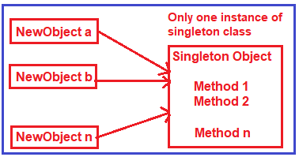
As you can see in the above diagram, different clients (NewObject a, NewObject b and
NewObject n) trying to get the singleton instance. Once the client gets the singleton
instance then they can invoke the methods (Method 1, Method 2, and Method n) using the same
instance.
- The first and most important advantage of using the singleton design pattern in C# is that it takes care of concurrent access to the shared resource. That means if we are sharing a resource with multiple clients simultaneously, then concurrent access to that resource is well managed by the singleton design pattern.
- It can be lazy-loaded and also has Static Initialization.
- To share common data i.e. master data and configuration data which is not changed that frequently in an application. In that case, we need to cache the objects in memory.
- As it provides a single global point of access to a particular instance, so it is easy to maintain.
- To reduce the overhead of instantiating a heavy object again and again.
The following are the implementation guidelines for using the singleton design pattern in C#.
- You need to declare a constructor that should be private and parameterless. This is required because it is not allowed the class to be instantiated from outside the class. It only instantiates from within the class.
- The class should be declared as sealed which will ensure that it cannot be inherited. This is going to be useful when you are dealing with the nested class. We will discuss this scenario with an example in our upcoming article.
- You need to create a private static variable that is going to hold a reference to the single created instance of the class if any.
- You also need to create a public static property/method which will return the single-created instance of the singleton class. This method or property first check if an instance of the singleton class is available or not. If the singleton instance is available, then it returns that singleton instance otherwise it will create an instance and then return that instance.
namespace SingletonDemo
{
public sealed class Singleton
{
private static int counter = 0;
private static Singleton instance = null;
public static Singleton GetInstance
{
get
{
if (instance == null)
instance = new Singleton();
return instance;
}
}
private Singleton()
{
counter++;
Console.WriteLine("Counter Value " + counter.ToString());
}
public void PrintDetails(string message)
{
Console.WriteLine(message);
}
}
}
We created the Singleton class as sealed which ensures that the class cannot be inherited and object instantiation is restricted in the derived class. The class is created with a private constructor which will ensure that the class is not going to be instantiated from outside the class. Again we declared the instance variable as private and also initialized it with the null value which ensures that only one instance of the class is created based on the null condition. The public property GetInstance is used to return only one instance of the class by checking the value of the private variable instance. The public method PrintDetails can be invoked from outside the class through the singleton instance.
TODO Command
TODO Null Object
TODO Specification Pattern
TODO State
TODO Data Access Pattern
TODO Mediator
TODO Chain of Responsibility
TODO Template Method
TODO Visitor
TODO Memento
TODO Rules Engine Pattern
TODO Bridge
TODO Interpreter
TODO Iterator
TODO Observer
TODO Discussion of Behavioral Patterns
Creational Patterns [5/5]
DONE Builder
The Builder Design Pattern builds a complex object using many simple objects and using a step-by-step approach. The Process of constructing a complex object should be generic so that the same construction process can be used to create different representations of the same complex object.
So, the Builder Design Pattern is all about separating the construction process from its representation. When the construction process of your object is very complex then only you need to use to Builder Design Pattern. If this is not clear at the moment then don’t worry we will try to understand this with an example.
Suppose we want to develop an application for displaying the reports. The reports we need to display either in Excel or in PDF format. That means, we have two types of representation of my reports. In order to understand this better, please have a look at the following diagram.
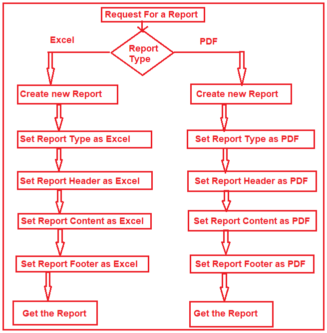
As you can see, in the above image, we are generating the report either in Excel and PDF. Here, the construction process involves several steps such as Create a new report, setting report type, header, content, and footer. If you look at the final output we have one PDF representation and one Excel representation. Please have a look at the following diagram to understand the construction process and its representation.
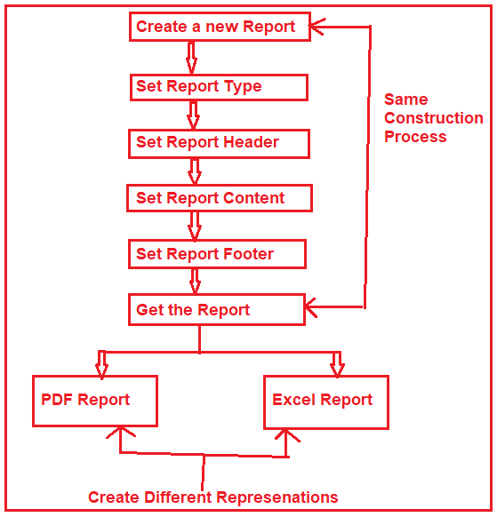
In order to separate the construction process from its representation, the builder design pattern Involve four components. They are as follows.
- Builder: The Builder is an interface that defines all the steps which are used to make the concrete product.
- Concrete Builder: The
ConcreteBuilderclass implements the Builder interface and provides implementation to all the abstract methods. The Concrete Builder is responsible for constructs and assembles the individual parts of the product by implementing the Builder interface. It also defines and tracks the representation it creates. - Director: The Director takes those individual processes from the Builder and defines the sequence to build the product.
- Product: The Product is a class and we want to create this product object using the builder design pattern. This class defines different parts that will make the product.
DONE Prototype
As per the GoF Definition, “Prototype Design Pattern specifies the kind of objects to create using a prototypical instance, and create new objects by copying this prototype”.
To simplify the above definition, we can say that, the Prototype Design Pattern gives us a way to create new objects from the existing instance of the object. That means it clone the existing object with its data into a new object. If we do any changes to the cloned object (i.e. new object) then it does not affect the original object.
Note: The Prototype Design Pattern is unique among the other creational design patterns as it doesn’t require a class instead it requires an end object.
In C#, when we try to copy one object to another object using the assignment = operator,
then both the objects will share the same memory address. And the reason is the assignment
operator = copies the reference, not the object except when there is a value type field.
This operator will always copy the reference, not the actual object.
DONE Factory Design Pattern
According to Gang of Four, the Factory Design Pattern states that “A factory is an object which is used for creating other objects”. In technical terms, we can say that a factory is a class with a method. That method will create and return different types of objects based on the input parameter, it received. In simple words, if we have a superclass and n number of subclasses, and based on the data provided, if we have to create and return the object of one of the subclasses, then we need to use the Factory Design.
In the Factory Design pattern, we create an object without exposing the object creation logic to the client and the client will refer to the newly created object using a common interface. The basic principle behind the factory design pattern is that, at run time, we get an object of a similar type based on the parameter we pass.
Suppose we have three credit card
classes i.e. MoneyBack, Titanium, and Platinum and these three classes are the subclasses of
CreditCard superclass or super interface. The CreditCard superclass or super interface has
three methods i.e. GetCardType, GetCreditLimit, and GetAnnualCharge. The subclasses i.e.
MoneyBack, Titanium, and Platinum have implemented the above three methods.
Our requirement is, we will ask the user to select the credit card. Once the user selects the credit card then we need to display the required information of that selected card. Let us first discuss how to achieve this without using the Factory Design Pattern in C#. Then we will discuss the problems and finally, we will create the same application using the Factory Design Pattern in C#.
Here we need to create either an interface or an abstract class that will expose the
operations a credit card should have. So, create a class file with the name CreditCard.cs
and then copy and paste the following code in it. As you can see, we created the interface
with three methods.
namespace FactoryDesignPattern
{
public interface CreditCard
{
string GetCardType();
int GetCreditLimit();
int GetAnnualCharge();
}
}
namespace FactoryDesignPattern
{
class MoneyBack : CreditCard
{
public string GetCardType()
{
return "MoneyBack";
}
public int GetCreditLimit()
{
return 15000;
}
public int GetAnnualCharge()
{
return 500;
}
}
}
namespace FactoryDesignPattern
{
public class Titanium : CreditCard
{
public string GetCardType()
{
return "Titanium Edge";
}
public int GetCreditLimit()
{
return 25000;
}
public int GetAnnualCharge()
{
return 1500;
}
}
}
namespace FactoryDesignPattern
{
public class Platinum : CreditCard
{
public string GetCardType()
{
return "Platinum Plus";
}
public int GetCreditLimit()
{
return 35000;
}
public int GetAnnualCharge()
{
return 2000;
}
}
}
Now in the client code, we will ask the user to select the Credit Card Type. And based on the Selected Credit card, we will create an instance of any one of the above three product implementation classes. So, modify the Main method as shown below.
using System;
namespace FactoryDesignPattern
{
class Program
{
static void Main(string[] args)
{
//Generally we will get the Card Type from UI.
//Here we are hardcoded the card type
string cardType = "MoneyBack";
CreditCard cardDetails = null;
//Based of the CreditCard Type we are creating the
//appropriate type instance using if else condition
if (cardType == "MoneyBack")
{
cardDetails = new MoneyBack();
}
else if (cardType == "Titanium")
{
cardDetails = new Titanium();
}
else if (cardType == "Platinum")
{
cardDetails = new Platinum();
}
if (cardDetails != null)
{
Console.WriteLine("CardType : " + cardDetails.GetCardType());
Console.WriteLine("CreditLimit : " + cardDetails.GetCreditLimit());
Console.WriteLine("AnnualCharge :" + cardDetails.GetAnnualCharge());
}
else
{
Console.Write("Invalid Card Type");
}
Console.ReadLine();
}
}
}
The above code implementation is very straightforward. Once we get the CardType value, then
by using the if-else condition we are creating the appropriate Credit Card instance. Then we
are just calling the three methods to display the credit card information in the console
window. So, What is the Problem of the above code implementation?
The above code implementation introduces the following problems
- First, the tight coupling between the client class (Program) and Product Class (MoneyBack, Titanium, and Platinum).
- Secondly, if we add a new Credit Card, then also we need to modify the Main method by adding an extra if-else condition which not only overheads in the development but also in the testing process
Let us see how to overcome the above problem by using the factory design pattern.
As per the definition of Factory Design Pattern, the Factory Design Pattern create an object without exposing the object creation logic to the client and the client refers to the newly created object using a common interface.
Please have a look at the following image. This is our factory class and this class takes
the responsibility of creating and returning the appropriate product object. As you can see
this class having one static method i.e. GetCreditcard and this method takes one input
parameter and based on the parameter value it will create one of the credit card (i.e.
MoneyBack, Platinum, and Titanium) objects and store that object in the superclass
(CrditCard) reference variable and finally return that superclass reference variable to the
caller of this method.
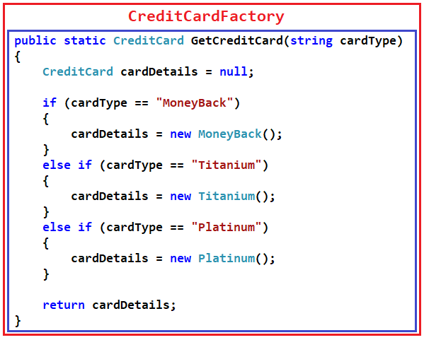
Now the client needs to create the object through CreditCardFactory. For example, if the
client wants to create the instance of Platinum Credit then he/she needs to do something
like the below. As you can see, he/she needs to pass the Credit card type to the
GetCreditcard method of the CreditCardFactory class. Now, the GetCreditcard() method will
create a Platinum class instance and return that instance to the client.
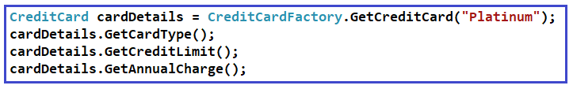
namespace FactoryDesignPattern
{
class CreditCardFactory
{
public static CreditCard GetCreditCard(string cardType)
{
CreditCard cardDetails = null;
if (cardType == "MoneyBack")
{
cardDetails = new MoneyBack();
}
else if (cardType == "Titanium")
{
cardDetails = new Titanium();
}
else if (cardType == "Platinum")
{
cardDetails = new Platinum();
}
return cardDetails;
}
}
}
using System;
namespace FactoryDesignPattern
{
class Program
{
static void Main(string[] args)
{
CreditCard cardDetails = CreditCardFactory.GetCreditCard("Platinum");
if (cardDetails != null)
{
Console.WriteLine("CardType : " + cardDetails.GetCardType());
Console.WriteLine("CreditLimit : " + cardDetails.GetCreditLimit());
Console.WriteLine("AnnualCharge :" + cardDetails.GetAnnualCharge());
}
else
{
Console.Write("Invalid Card Type");
}
Console.ReadLine();
}
}
}
DONE Factory Method
According to Gang of Four Definition “Define an interface for creating an object, but let the subclasses decide which class to instantiate. The Factory method lets a class defer instantiation it uses to subclasses”.
Let us simplify the above definition. The Factory Method Design Pattern is used, when we need to create the object (i.e. instance of the Product class) without exposing the object creation logic to the client. To achieve this, in the factory method design pattern we will create an abstract class as the Factory class which will create and return the instance of the product, but it will let the subclasses decide which class to instantiate. If this is not clear at the moment then don’t worry, I will explain this with one real-time example.
Please have a look at the following image. As you can see in the below diagram, we have
three credit cards i.e. MoneyBack, Titanium, and Platinum. These credit cards are nothing
but our Product classes. Again these three Credit Card classes are the subclasses of the
CreditCard super interface. The CreditCard super interface defines the operations (i.e.
GetCardType, GetCreditLimit, and GetAnnualCharge) which need to be implemented by the
subclasses (i.e. MoneyBack, Titanium, and Platinum).
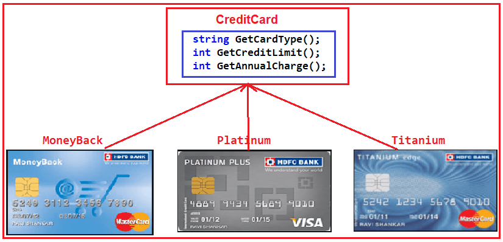
As per the definition of the Factory Method Design Pattern, we need to create an abstract
class or interface for creating the object. Please have a look at the following diagram.
This is going to be our Creator class that declares the factory method, which will return an
object of type Product (i.e. CreditCard).
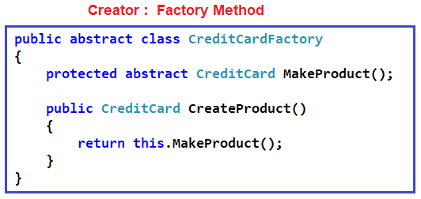
As you can see, the above abstract class (i.e. CreditCardFactory) contains two methods, one
abstract method i.e. MakeProduct() and one concrete method i.e. CreateProduct(). The
CreateProduct() method internally calls the MakeProduct() method of the subclass which will
create the product instance and return that instance.
Please have a look at the following diagram. As we have three credit cards (i.e. MoneyBack,
Platinum, and Titanium), so here we created three subclasses (i.e. PlatinumFactory,
TitaniumFactory, and MoneyBackFactory) of the Abstract CreditCradFactory class and implement
the MakeProduct method. This method is going to return the actual product object i.e.
(MoneyBack, ~Platinum and Titanium).
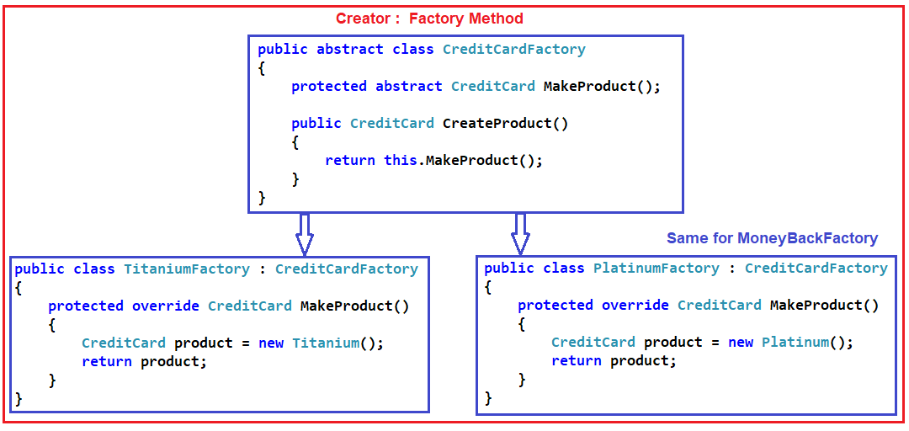
Now let see how the client is going to consume the above CreditCardFactory to create an object. Please have a look at the following diagram.
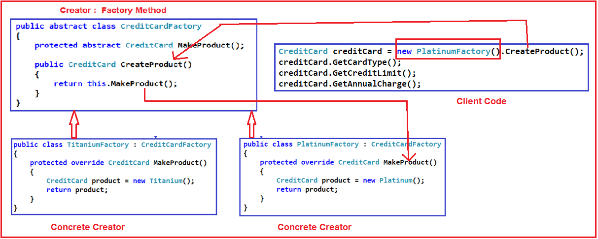
DONE Abstract Factory
According to Gang of Four Definition: “The Abstract Factory Design Pattern provides a way to encapsulate a group of individual factories that have a common theme without specifying their concrete classes“.
In simple words we can say, the Abstract Factory is a super factory that creates other factories. This Abstract Factory is also called the Factory of Factories.
Suppose we want to create the objects of a group of land animals such as Cat, Lion, and Dog.
Please have a look at the following diagram. Here, as you can see we have three classes i.e. Cat, Lion, and Dog. And these three classes are the subclasses of Animal superclass or super interface. The Animal superclass or super interface has one method i.e. Speak() method. The Cat class will implement that Speak method and return Meow. Similarly, the Lion class will implement the Speak() method and will return Roar and in the say the Dog class will implement the Speak() method and return Bark bark. The Cat, Lion, and Dog are living in the Land, so they belong to the Land Animal group.
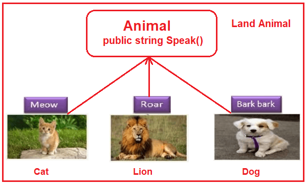
Using Factory Design Pattern we can implement the above easily. Please have a look at
the following diagram. As per the factory design pattern, LandAnimalFactory is the factory
class and that class has one method i.e. GetAnimal. This method takes one parameter i.e. the
animal type and then it will create and return the appropriate object. In this case, the
animal object can be a dog, lion, or cat. This method will return the Superclass or super
interface i.e. Animal. For example, if you pass the Animal Type as a cat, then it will
create the Cat class object and assign that object to the Superclass reference variable i.e.
Animal and return that Superclass reference variable to the caller.
Let say, we have another group of sea animals such as Octopus and Shark. The way we implement the Land animals, in the same way, we need to implement the Sea animals. Please have a look at the following diagram for a better understanding.
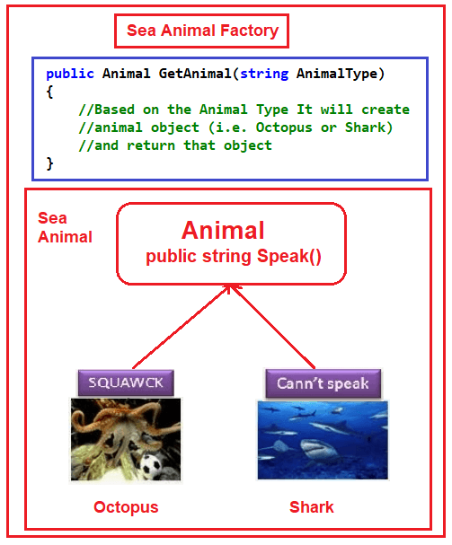
Structural Patterns [1/7]
TODO Facade
TODO Decorator
TODO Composite
DONE Adapter
The Adapter Design Pattern in C# works as a bridge between two incompatible interfaces. This design pattern involves a single class called adapter which is responsible for communication between two independent or incompatible interfaces. So, in simple words, we can say that the Adapter Design Pattern helps two incompatible interfaces to work together. If this is not clear at the moment then don’t worry we will understand this with an example.
On the right-hand side, you can see the Third Party Billing System and on the left side, you can see the Client i.e. the Existing HR System. Now, we will see how these two systems are incompatible and we will also see how we will make them compatible using Adapter Design Patterns in C#.
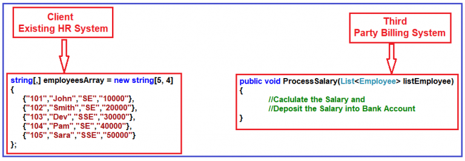
As you can see, the Third Party Billing System provides one functionality called
ProcessSalary. What this ProcessSalary method will do is, it will take the employee list
(i.e. List<Employee>) as an input parameter and then loop through each employee and
calculate the salary and deposit the salary into the employee’s bank account.
On the left-hand side i.e. in the Existing HR System, the employee information is in the
form of the string array. The HR System wants to process the salary of employees. Then what
the HR System has to do is, it has to call the ProcessSalary method of the Third Party
Billing System. But if you look at the HR system, the employee information is in the form of
a string array and the ProcessSalary method of the Third Party Billing System wants to data
in List<Employee>. So, the HR System cannot call directly to the Third Party Billing System
because List<Employee> and string array are not compatible. So, these two systems are
incompatible.
We can use the Adapter Design Pattern in C# to make these two systems or interfaces work together. Now, we need to introduce an Adapter between the HR System and the Third Party Billing System as shown in the below image.
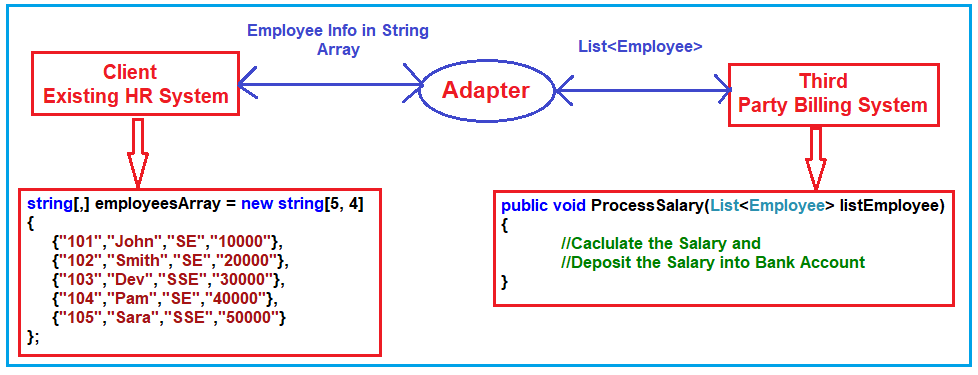
Now the HR System will send the employee information in the form of a String Array to the
Adapter. Then what this Adapter will do is, it will read the employee information from the
string array and populate the employee object and put each employee object into the
List<Employee> and then the Adapter will send the List<Employee> to the ProcessSalary method
of Third Party Billing System. Then the ProcessSalary method calculates the Salary of each
employee and deposits the salary into the Employee’s bank account.
So, in this way, we can make two incompatible interfaces work together with the help of the Adapter Design Pattern in C#. Again the Adapter Design Pattern can be implemented in two ways. They are as follows.
Object Adapter Pattern
An Object Adapter delegates to an adaptee object. Let us understand the class diagram first. In order to understand the class diagram and the different components involved in the Adapter Design Pattern please have a look at the following diagram.
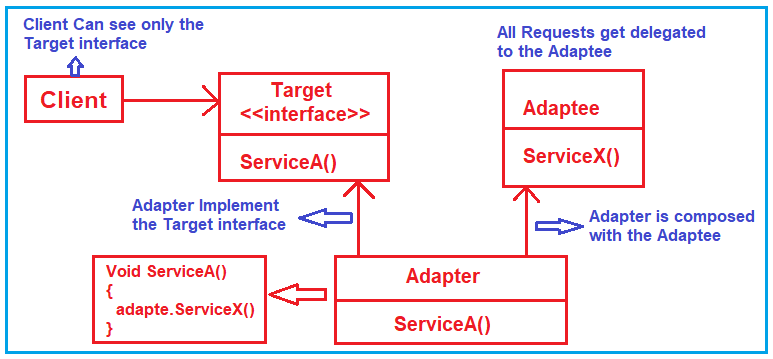
Employee class:
namespace AdapterDesignPattern
{
public class Employee
{
public int ID { get; set; }
public string Name { get; set; }
public string Designation { get; set; }
public decimal Salary { get; set; }
public Employee(int id, string name, string designation, decimal salary)
{
ID = id;
Name = name;
Designation = designation;
Salary = salary;
}
}
}
Adaptee:
using System;
using System.Collections.Generic;
namespace AdapterDesignPattern
{
public class ThirdPartyBillingSystem
{
//ThirdPartyBillingSystem accepts employees information as a List to process each employee salary
public void ProcessSalary(List<Employee> listEmployee)
{
foreach (Employee employee in listEmployee)
{
Console.WriteLine("Rs." +employee.Salary + " Salary Credited to " + employee.Name + " Account");
}
}
}
}
Target:
namespace AdapterDesignPattern
{
public interface ITarget
{
void ProcessCompanySalary(string[,] employeesArray);
}
}
Adapter:
using System;
using System.Collections.Generic;
namespace AdapterDesignPattern
{
public class EmployeeAdapter : ITarget
{
ThirdPartyBillingSystem thirdPartyBillingSystem = new ThirdPartyBillingSystem();
public void ProcessCompanySalary(string[,] employeesArray)
{
string Id = null;
string Name = null;
string Designation = null;
string Salary = null;
List<Employee> listEmployee = new List<Employee>();
for (int i = 0; i < employeesArray.GetLength(0); i++)
{
for (int j = 0; j < employeesArray.GetLength(1); j++)
{
if (j == 0)
{
Id = employeesArray[i, j];
}
else if (j == 1)
{
Name = employeesArray[i, j];
}
else if (j == 2)
{
Designation = employeesArray[i, j];
}
else
{
Salary = employeesArray[i, j];
}
}
listEmployee.Add(new Employee(Convert.ToInt32(Id), Name, Designation, Convert.ToDecimal(Salary)));
}
Console.WriteLine("Adapter converted Array of Employee to List of Employee");
Console.WriteLine("Then delegate to the ThirdPartyBillingSystem for processing the employee salary\n");
thirdPartyBillingSystem.ProcessSalary(listEmployee);
}
}
}
Client:
namespace AdapterDesignPattern
{
class Program
{
static void Main(string[] args)
{
string[,] employeesArray = new string[5, 4]
{
{"101","John","SE","10000"},
{"102","Smith","SE","20000"},
{"103","Dev","SSE","30000"},
{"104","Pam","SE","40000"},
{"105","Sara","SSE","50000"}
};
ITarget target = new EmployeeAdapter();
Console.WriteLine("HR system passes employee string array to Adapter\n");
target.ProcessCompanySalary(employeesArray);
Console.Read();
}
}
}